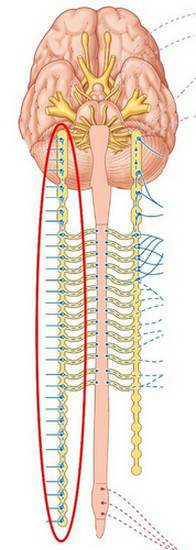
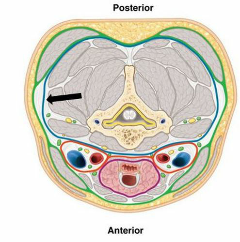

Vraag 1
Een vrouw van 21 jaar staat rond 17.00 uur in een volle, drukke en warme metro. Ze kan zich met moeite verplaatsen door de drukte. Ze is op weg naar huis en erg moe. Ze voelt zich langzaam misselijk worden en gaat wazig zien. Dan valt ze flauw. Omstanders zien dat ze haar urine laat lopen en dat haar benen schokkende bewegingen maken. Als ze na een paar minuten bijkomt voelt ze zich erg suf. Welke twee gegevens pleiten meer voor een vasovagale collaps dan epilepsie als oorzaak van de wegraking?
Meerdere antwoorden mogelijk.
Vraag 2
Een vrouw van 50 jaar doet mee aan een hardloopwedstrijd. Al na 1 km valt ze plotseling flauw. Na korte tijd komt ze weer bij. Ze is even wat suf. Ze heeft een blanco voorgeschiedenis. Welk aanvullend onderzoek is nu het meest aangewezen om de oorzaak te achterhalen?
Vraag 3
Kies de juiste alternatieven.
Binding van aan G-eiwit gekoppelde receptoren leidt tot van G-eiwitten.
Vraag 4
Welk van de onderstaande moleculen behoort tot de second messengers?
Vraag 5
In welk van de onderstaande eiwitten worden vaak mutaties gevonden in humane kankercellen?
Vraag 6
Kies de juiste alternatieven.
Parathyroïdhormoon wordt geproduceerd in de door .
Vraag 7
Van welk van de onderstaande hormonen is de concentratie verhoogd in het bloed van patiënten met een tumor in het bijniermerg?
Vraag 8
Via welke zenuw(en) innerveert het sympathische zenuwstelsel de abdominale organen? Via de:
Vraag 9
Welke omcirkelde structuur wordt in bovenstaande afbeelding schematisch weergegeven?

Vraag 10
Welk deel van de pancreas heeft een nauwe relatie met de rechternier?
Vraag 11
De spierfascie (deep cervical fascia) in de hals splitst zich in 3 bladen. Welke van deze bladen is in het blauw en met de pijl aangegeven?

Vraag 12
Wat is de klinische relevantie van de retropharyngeale ruimte?
Vraag 13
In 'Recepten voor een goed gesprek' worden er drie arts-patiëntmodellen besproken betreffende de manier waarop artsen en patiënten samenwerken tijdens gespreksvoering. In welk model is de autonomie van de patiënt het minst?
Vraag 14
Tijdens een consult heeft de huisarts van patiënt de Wijs haar hoofdklachten en hulpvraag goed in kaart gebracht. Welke interventie van de arts is nu gewenst?
Vraag 15
Van het antibioticum rifampicine is bekend dat het een plasma-eiwitbinding heeft van ongeveer 90 %. Van het antibioticum tobramycine is bekend dat het een plasma-eiwitbinding heeft van ongeveer 10 %. Voor het beantwoorden van deze vraag mag u er vanuit gaan dat beide farmaca een gelijk verdelingsvolume hebben en, in de gebruikte doseringen, op dezelfde wijze geëlimineerd worden door het lichaam. Bovendien heeft de ziekte waarvoor de farmaca worden gebruikt geen effect gehad op de concentratie van de plasma-eiwitten bij de patiënt. Ga uit van eenmalige intraveneuze injectie van rifampicine en tobramycine onder gelijke overige omstandigheden. Welke van de onderstaande conclusies is dan het meest juist?
Vraag 16
Kies de juiste alternatieven.
Mevrouw K (54 jaar oud) krijgt al langere tijd de angiotensine II receptor antagonist losartan door haar huisarts voorgeschreven om haar hoge bloeddruk (=hypertensie) te behandelen. Bij de reguliere 3-maandelijkse controle blijkt de bloeddruk nu opeens fors hoger te zijn dan verwacht. Bij navraag door de huisarts vertelt mevrouw K dat zij sinds ongeveer een maand Sint Janskruid tabletten slikt tegen haar neerslachtigheid. De tabletten heeft ze gekocht bij een drogisterij. Van Losartan is bekend dat het een substraat is voor het cytochroom P450 3A4 (=CYP3A4), terwijl het Sint Janskruid bekend staat als een inductor (=inducer) van CYP3A4. Wat zijn de te verwachten gevolgen van de zelfmedicatie met Sint Janskruid door mevrouw K? De biotransformatie van Losartan wordt . Om de hypertensie effectief te behandelen zal de dagdosis van Losartan moeten worden.
Vraag 17
STELLING: Een receptor antagonist onderscheidt zich van een agonist voor dezelfde receptor door een lagere affiniteit. Deze stelling is:
Vraag 18
STELLING: Muscarine is een niet-endogene (= niet-lichaamseigen) agonist voor een receptor die behoort tot de categorie van metabotrope receptoren. Deze stelling is:
Vraag 19
Anna B. is een 14-jarig meisje dat ongeveer 3 weken is begonnen met roken. Zij rookt nu 6-10 sigaretten per dag en merkt daarbij dat iedere dag de eerste sigaret lichte hartkloppingen (=tachycardie) veroorzaakt die niet meer optreden bij de volgende sigaretten. Welke vorm van adaptatie lijkt te zijn opgetreden bij Anna?
Vraag 20
Jaap P (15 jaar oud) is sinds 1 jaar bekend met asthma bronchiale waarvoor hij succesvol wordt behandeld met een geneesmiddel. Het gebruikte farmacon heeft een effectiviteit (=efficacy) van 0 en bindt reversibel aan muscarine receptoren. Wat is, op basis van deze farmacologische karakteristieken, de meest juiste typering van het gebruikte farmacon? Het farmacon is een:
Vraag 21
Salbutamol is een kortwerkende beta-2 adrenoreceptor agonist. Wat is het onmiddelijke gevolg van de binding van salbutamol aan zijn receptor?
Vraag 22
Kies de juiste alternatieven.
Monoamine oxidase is direct verantwoordelijk voor de: van .
Vraag 23
Kies de juiste alternatieven.
(levo)DOPA speelt een belangrijke rol in de aanmaak van: in het deel van het sympathisch zenuwstelsel.
Vraag 24
Kies de juiste alternatieven.
Omdat bij een prematuur geboren baby vlak na de geboorte een lage APGAR score wordt vastgesteld waarbij de neonaat hypotherm en lethargisch is, wordt besloten om een uitgebreid diagnostisch bloedonderzoek te verrichten. Op basis van de uitslagen van dit onderzoek wordt vastgesteld dat er sprake is van een erfelijke dopamine beta-hydroxylase deficiëntie. Op basis van deze gegevens verwacht u dat in het bloedplasma: noradrenaline concentraties zijn gemeten, en de activiteit in het zenuwstelsel is verminderd.
Vraag 25
De volgende organen worden uitsluitend parasympatisch geïnnerveerd:
Vraag 26
Bronchodilatatie vindt plaats na directe stimulatie van het volgende receptortype:
Vraag 27
Constrictie van sfincters in het maag-darm kanaal vindt plaats als direct gevolg van stimulatie van het volgende receptor type (drie juiste antwoorden mogelijk):
Meerdere antwoorden mogelijk.
Vraag 28
Welk enzym speelt GEEN rol in de aanmaak van adrenaline uit Tyrosine:
Vraag 29
In de myenterische plexus vindt homotrope presynaptische inhibitie van het parasympatisch zenuwstelsel plaats door noradrenaline.
Vraag 30
Dopamine is een co-transmitter in bepaalde sympatische neuronen.
Vraag 31
Waarom gebruiken de hersenen geen vetzuren voor ATP productie?
Vraag 32
De omzetting van pyruvaat naar acetyl-CoA wordt verzorgd door het enzym pyruvaatdehydrogenase. Dit enzym wordt onder andere gereguleerd door de reciproke acties van insuline en glucagon. Welke van de onderstaande beweringen is waar? Onder invloed van glucagon wordt pyruvaatdehydrogenase:
Vraag 33
Een 68 jarige patiënt voelt zich al een paar dagen wat zwakjes, is subfebriel zonder hoesten of rhinitis klachten maar wel iets pijn bij de kaakhoeken. Patiënt wijt dit aan het slecht zittende kunstgebit. Hij nam wat bedrust en voelde wat klam aan. Na 3 dagen wordt patiënt opeens zeer kortademig en neigt hij naar bewustzijnsverlies. In het ziekenhuis op de SEH aangekomen is de bloeddruk 70/40 mm Hg met een hartfrequentie van 125/min. De te hulp geroepen intensivist stelt na onderzoek vast dat er sprake is van een ventrikel septum ruptuur. Bij welk type shock past dit klinisch beeld het beste? Het juiste antwoord dat u geeft is:
Vraag 34
Welke van de onderstaande stellingen met betrekking tot shock is/zijn juist/onjuist? 1. Septische shock kan leiden tot multiple orgaan falen. 2. Cardiogene shock kan leiden tot multiple orgaan falen.
Vraag 35
Welke van de onderstaande stellingen met betrekking tot baroreceptoren is/zijn juist/onjuist? A. Baroreceptoren zijn aanwezig in de boezem van het hart en in de vena cava. B. Baroreceptoren zijn aanwezig in de sinus caroticus. C. Baroreceptoren zijn aanwezig in de aortaboog.
Vraag 36
Wat is de halfwaardetijd van het schildklierhormoon T4?
Vraag 37
Carbachol is een
Vraag 38
Type 1 diabetes kenmerkt zich door:
Vraag 39
In de acute fase van diabetes mellitus type 1 hebben patiënten meestal geen last van:
Vraag 40
Wat is de relatie tussen de serum IGF-I spiegel en de geheugenfunctie bij patiënten met onbehandelde acromegalie?
Vraag 41
Diabetes mellitus medicatie kan vervelende gastro-intestinale bijwerkingen zoals diarree hebben. Bij welk van onderstaande geneesmiddelen zijn deze bijwerkingen het meest waarschijnlijk?
Vraag 42
Wat onderscheidt T4 onder andere van T3?
Vraag 43
Perifere en centrale thermoreceptoren meten veranderingen in de lichaamstemperatuur. Deze informatie wordt doorgegeven aan de hersenen. Welk onderdeel van de hersenen speelt een centrale rol in het integreren van deze informatie?
Vraag 44
De Inuit in Alaska kunnen zonder problemen in de winter met blote handen in de kou werken. Voor de gemiddelde Nederlander geldt dit niet. Hoe komt dit?
Vraag 45
Tijdens de geboorte leidt een verhoogde productie van oxytocine tot een verwijding van de baarmoedermond. Deze verwijding leidt weer tot een verdere verhoging van de oytocineproductie. Hoe noemen we deze interactieve regulatie?
Vraag 46
Kies de juiste alternatieven.
Thyroid releasing hormone (TRH) heeft effect op de . Adrenocorticotropic hormone (ACTH) heeft effect op .
Vraag 47
Steroid hormonen hebben hun effect via:
Vraag 48
Een internist-endocrinoloog stelt bij mevrouw Janssen vast dat er sprake is van secundaire hyposecretie van cortisol. Op basis van welke waarneming in het bloed is deze diagnose het meest waarschijnlijk?
Vraag 49
Er meldt zich op de poli kindergeneeskunde een jongen van 12 jaar waarbij het volgende wordt vastgesteld: een groeiachterstand, geen lichamelijke kenmerken van beginnende sexuele ontwikkeling, verminderde responsiviteit op een aangeboden stressor. Welke parameters in het bloed van deze jongen zullen afwijkend zijn, naast groeihormoon?
Vraag 50
Osteoporose is een veel voorkomende ziekte, die meestal op oudere leeftijd wordt gezien. Wat is hiervan de reden?
Vraag 51
Een vrouw van 40 jaar heeft een moon face, buffalo hump en centripetale adipositas. U denkt aan de diagnose Cushing syndroom op basis verhoogde hormonen vanuit een bijnieradenoom. Welk verhoogd hormoon verwacht u zeer waarschijnlijk in het bloed aan te treffen?
Vraag 52
Kies de juiste alternatieven.
Welke effecten heeft insulinestimulering van normaal vetweefsel? van glucoseopname. van lipogenese.
Vraag 53
Het Cushing syndroom kan gepaard gaan met hyperglycaemie. Wat is een van de oorzaken van deze hyperglycaemie?
Vraag 54
Welke organen of orgaansystemen zijn vaak aangetast door diabetische microangiopathie?